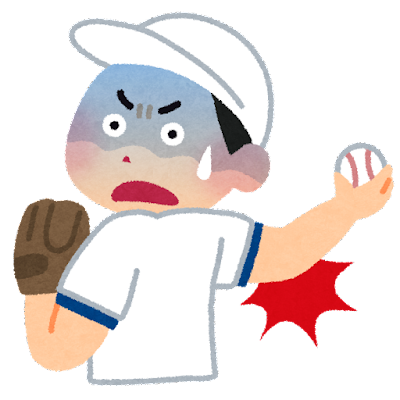
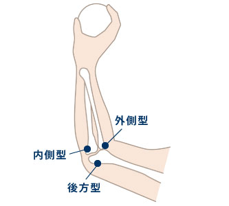

野球肘
野球肘とは
野球肘とは、主に野球などの投球を伴うスポーツで起こる肩や肘の負傷です。
野球肘は怪我の名前ではなく、肘関節に生じる疼痛性障害の総称で、その中には肘関節の多くの病変を含みます。
野球肘は子供だけでなく大人にも発症し、痛みの出た時期によって「少年期野球肘」と「成人期野球肘」の2つに分けられます。
「少年期野球肘」は骨端線（成長線）閉鎖前の成長途上の骨端線や骨軟骨の障害、「成人期野球肘」骨端線閉鎖後の骨、関節、靭帯の障害です。

また、障害の部位から図のとおり、内側型、外側型、後方型に分類されます。

症状
肘の伸びや曲がりが悪くなる
激痛により肘を伸縮できなくなる
まれに手の小指側（尺側）にしびれや感覚障害が生じる
原因
投球動作をした際に肘の内側に牽引力が加わり、筋肉や靭帯、神経が伸ばされ細かい損傷が生じます。
これを繰り返すことにより肘への負荷が過剰となることが原因です。
治療
野球肘は、投球数の多さが要因になりますので、まずは安静にしましょう。
痛みや炎症を抑えるため、アイシングや痛み止めや湿布の処方などを行います。
また、身体の使い方やフォームがとても重要です。
リハビリにより、肘関節周囲もしくは肩、体幹といった部位の機能改善を行い、投球フォームの修正を行います。